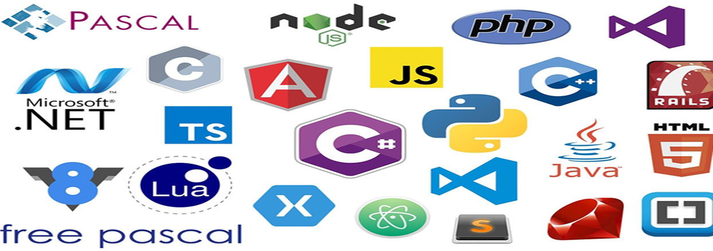

O que é e para que serve IDE?
IDE significa, em tradução livre, Ambiente Integral de Desenvolvimento e é um software criado para facilitar a vida dos programadores. Saiba mais!
IDE, ou Ambiente Integral de Desenvolvimento em tradução livre, é um software criado com a finalidade de facilitar a vida dos programadores. Neste tipo de aplicação estão todas as funções necessárias para o desenvolvimento desde programas de computador a aplicativos mobile, assim como alguns recursos que diminuem a ocorrência de erros nas linhas de código.
Se no passado os desenvolvedores precisavam apenas de um editor de texto e de um navegador para criar um software, agora, com os IDEs, eles possuem mais opções para otimizar o tempo gasto com os códigos. Imagine os IDEs como as calculadoras. Logicamente você aprende a fazer as operações matemáticas na escola, mas raramente as faz manualmente quando precisa.
Uma das principais vantagens dos IDEs está na capacidade de compilar bibliotecas completas de linguagem. Outra função bastante comum neste tipo de programa são os debuggers, que apontam os erros que ocasionalmente podem ocorrer ao escrever o código. Alguns IDEs também possuem o autocompletar.
Já a desvantagem fica por conta de necessitar um conhecimento razoável de programação. Usuários com pouca experiência – ou que estão dando os primeiros passos no desenvolvimento de software – podem se confundir com o excesso de recursos que alguns IDEs têm.
Principais IDEs
NetBeans – ambiente multiplataforma, tem como principal característica o layout simples e intuitivo. Suporta XML, C, PHP, C++, Ruby e HTML.
Notepad++ – se destaca pelo recurso que permite a identificação da linguagem que está sendo usada. Leve, tem como ponto negativo estar disponível apenas para Windows. Suporta Assembly, Ruby C, HTML, PHP, JavaScript, ASP, SQL, C++, Java, C#, XML, Objective-C,CSS, Pascal, Perl, Python e Lua.
Sublime Text – um dos mais populares, tem como principal recurso a possibilidade de instalar plugins de acordo com a necessidade do usuário. Suporta C, C++, C#, CSS, HTML, Haskell, Java, Latex, PHP, Ruby, SQL, XML, JavaScript e Groovy.
EDITOR DE TEXTO
Um editor de texto é um aplicativo de edição de arquivos/ficheiros de texto.
Editores de texto são frequentemente equipados com sistemas operacionais ou pacotes de desenvolvimento de software, e pode ser usado para alterar arquivos de configuração .
Arquivos de texto plano X Arquivos de processador de texto
Existem diferenças importantes entre o arquivos de texto plano (ou puro) criados por um editor de texto e arquivos de documento criado por processadores de texto como o Microsoft Word, WordPerfect, ou OpenOffice.org. Resumidamente:
Um arquivo de texto puro é representado e editado, mostrando todos os caracteres que estão presentes no arquivo. Os caracteres somente utilizados por 'mark-up' são os usados caractere de controle e codificação de caracteres, na prática seriam: nova linha,tabulação e formfeed. A codificação de caracteres mais comumente utilizada é ASCII, sobretudo recentemente, como arquivos de texto plano são mais utilizados para a programação e configuração, menos freqüentemente utilizados para documentação do que no passado.
Os documentos criados por um processador de texto geralmente contêm arquivo de formato específicos para caractere de controle além do que está definido no conjunto de caracteres. Estes permitem funções como negrito, itálico, fontes, colunas, tabelas, etc. Esses e outros símbolos comuns de formatação eram associados apenas a editoração eletrônica, mas agora são comuns em simples processadores.
EDITOR DE CÓDIGO
Um editor de código-fonte é um programa de editor de texto projetado especificamente para editar o código-fonte de programas de computador.
Pode ser um aplicativo independente ou pode ser incorporado em um ambiente de desenvolvimento integrado (IDE) ou navegador da web . Os editores de código fonte são uma ferramenta de programação fundamental , pois o trabalho fundamental dos programadores é escrever e editar o código fonte.
Recursos
Os editores de código-fonte têm recursos projetados especificamente para simplificar e acelerar a digitação do código-fonte, como realce de sintaxe , recuo , funcionalidade de preenchimento automático e correspondência de chaves . Esses editores também fornecem uma maneira conveniente de executar um compilador , intérprete , depurador ou outro programa relevante para o processo de desenvolvimento de software . Portanto, embora muitos editores de texto como o Bloco de Notas possam ser usados para editar o código-fonte, se eles não aprimoram, automatizam ou facilitam a edição do código, eles não são editores de código-fonte.
Os editores de estrutura são uma forma diferente de editor de código-fonte, onde, em vez de editar o texto bruto, manipula-se a estrutura do código, geralmente a árvore de sintaxe abstrata . Nesse caso, recursos como realce de sintaxe, validação e formatação de código são implementados de maneira fácil e eficiente a partir da árvore de sintaxe concreta ou da árvore de sintaxe abstrata, mas a edição geralmente é mais rígida do que o texto de forma livre. Os editores de estrutura também exigem amplo suporte para cada idioma e, portanto, são mais difíceis de estender para novos idiomas do que os editores de texto, onde o suporte básico requer apenas o suporte ao realce ou recuo da sintaxe. Por esse motivo, editores de estrutura rígidos não são populares para edição de código-fonte, embora alguns IDEs ofereçam funcionalidade semelhante.
Um editor de código-fonte pode verificar a sintaxe enquanto o código está sendo inserido e avisar imediatamente sobre problemas de sintaxe. Alguns editores de código-fonte compactam o código-fonte, geralmente convertendo palavras-chave comuns em tokens de byte único, removendo espaços em branco desnecessários e convertendo números em um formato binário. Esses editores de tokenização posteriormente descompactam o código-fonte ao visualizá-lo, possivelmente imprimindo -o com maiúsculas e espaçamento consistentes. Alguns editores de código-fonte fazem as duas coisas.
Exemplos notáveis
Eclipse (multiplataforma, incluindo Linux, macOS, Windows)
Emacs (multiplataforma, incluindo Unix , Linux, macOS, Windows)
Gedit (multiplataforma, incluindo Linux, macOS, Windows)
Editor interno do Microsoft Visual Studio (Windows)
NetBeans
Bloco de notas ++ (Windows)
SlickEdit (multiplataforma, incluindo Linux, macOS, Windows, Solaris , HP-UX , AIX )
TextMate (OS X)
vi / Vim (multiplataforma, incluindo Unix, Linux, macOS, Windows)
Código do Visual Studio (multiplataforma, incluindo Linux, OS X, Windows)
Xcode (OS X)